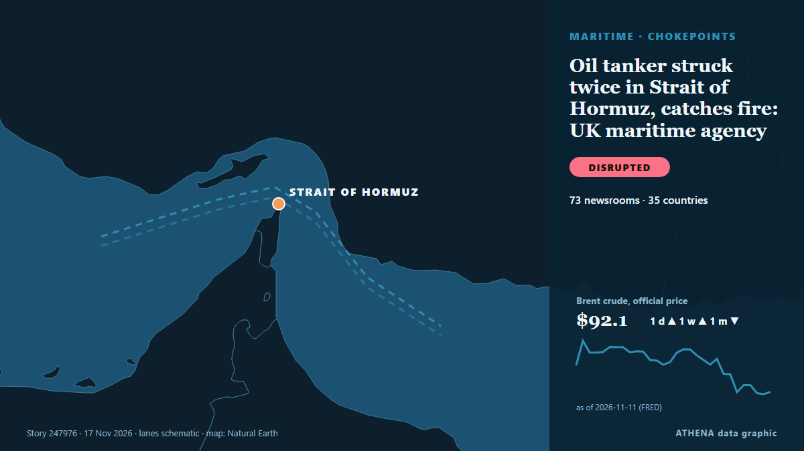

Ναυτιλία & λιμάνια
ΧορηγούμενοΠαρουσιάζεται από  Cybernetics and Artificial Intelligence Lab Welcome to the Cybernetics and Artificial Intelligence Laboratory, established at the Department of Business Administration of the National and Kapodistrian University of Athens. The lab is headed by Professor Dimitrios Thomakos. The lab aims to do research that can be published in top venues. Our research uses tools and methods of Artificial Intelligence, and lies in the following areas: - Forecasting - Decision making - Cyber security - Finance We are always looking forward to collaborating with exceptional students!
Cybernetics and Artificial Intelligence Lab Welcome to the Cybernetics and Artificial Intelligence Laboratory, established at the Department of Business Administration of the National and Kapodistrian University of Athens. The lab is headed by Professor Dimitrios Thomakos. The lab aims to do research that can be published in top venues. Our research uses tools and methods of Artificial Intelligence, and lies in the following areas: - Forecasting - Decision making - Cyber security - Finance We are always looking forward to collaborating with exceptional students!
| 4 Νοε | 0 |
|---|---|
| 5 Νοε | 0 |
| 6 Νοε | 0 |
| 7 Νοε | 0 |
| 8 Νοε | 0 |
| 9 Νοε | 1 |
| 10 Νοε | 0 |
| 11 Νοε | 1 |
| 12 Νοε | 6 |
| 13 Νοε | 0 |
| 14 Νοε | 6 |
| 15 Νοε | 1 |
| 16 Νοε | 7 |
| 17 Νοε | 0 |
Οι τίτλοι των ειδήσεων παρουσιάζονται στα αγγλικά, όπως δημοσιεύτηκαν.

Oil tanker struck twice in Strait of Hormuz, catches fire: UK maritime agency
UK Maritime Trade Operations says 2nd strike caused fire aboard disabled tanker north of Oman's Khasab; crew unaccounted for. από Anadolu Agency (English)
Port of Gothenburg eyes large-scale biogas bunkering in 2027
Sweden’s Port of Gothenburg is gearing up to launch a new LBG liquefaction plant next year to enable large-scale liquefied biogas bunkering. από Offshore Energy
Iran says 2 oil tankers hit mines, catch fire in Strait of Hormuz
IRGC Navy says it mined US-created southern route through strait. από Anadolu Agency (English)
ONE Joins Maersk, Hapag, and Others in Return to Suez Canal
Ocean Network Express (ONE) returned to the Suez Canal route for the first time in nearly three years as it seeks to keep up with its alliance partner... από The Maritime Executive
Iran FM says neighbouring Asian states back two-day Hormuz plan
Tehran has said it is ready to reopen the strait within two days if the US agrees to its conditions. από The Straits Times
Oil tanker crashes into Lumut seawall during unauthorised sea trial
LUMUT: An oil tanker that crashed into a seawall at Taman Esplanade Marina Wing here early today is believed to have been conducting an unauthorised sea trial. από New Straits Times
2 violating oil tankers explode in south Hormuz Strait: IRGC
TEHRAN, Nov. 15 (MNA) – The Public Relations Office of the IRGC Navy Force has announced that two oil tankers caught fire and exploded in southern Strait of Hormuz. από Mehr News (English)
Yemeni forces' retreat leaves Houthis in control of key Red Sea waterway
Saudi-backed forces say they are moving troops from the Bab al-Mandab Strait to protect the interim capital, Aden. από BBC News
Trump Extends Jones Act Waiver as Oil Transport Pressures Persist
President Donald Trump extended for 90 days a waiver of a shipping law to allow foreign-flagged ships to transport oil and other commodities between US ports, a White House official said on Friday… από Offshore Engineer
Black Sea ship attacks ‘another front’ of Russia's war: EU
With Black Sea drone attacks disrupting trade for the world’s biggest wheat exporter, Russian farmers are… από BusinessWorld
Tanker steering problem caused New Orleans ship collision
The asphalt tanker vessel that struck a docked cruise boat in the Mississippi River at New Orleans last week experienced a steering problem in which its rudder was stuck in one position, US… από RTÉ News
Cargo Ship Strikes Bridge Between New Jersey and Philadelphia
A cargo ship struck a bridge across the Delaware River on Thursday, disrupting traffic between Palmyra, New Jersey, and Philadelphia, according to a Pennsylvania lawmaker. από Insurance Journal
ATI Secures Manila South Harbour Concession Renewal To 2063
Renewal provides long-term certainty for ATI to advance investment in port modernisation, innovation and sustainable infrastructure MANILA, PHILIPPINES – Media OutReach Newswire – 12 November 2026… από Laotian Times
Dubai ranks 12th among world’s leading maritime cities as Abu Dhabi climbs to 15th
Dubai ranks 12th globally and Abu Dhabi rises to 15th in the 2026 Leading Maritime Cities report, with Dubai also fifth worldwide for maritime resilience. από Arabian Business
32 injured after tanker hits New Orleans riverboat
Thirty-two people were injured after an asphalt tanker lost steering and collided with a docked riverboat on the Mississippi River, capsizing the vessel, officials said. από Khmer Times
Evergreen Line Resumes Suez Canal Transits with Ever Eon's Maiden Voyage
Evergreen Line returns to the Suez Canal, marking a significant shift in container shipping as Ever Eon completes its first transit. από SeaNews Türkiye
Oil tanker on fire after hitting mine in Strait of Hormuz
Tankers in recent weeks have attempted to navigate what were described as unauthorised routes in the waterway. από The Independent
2 oil supertankers catch fire after explosions in Strait of Hormuz: Iran
Why is Iran attacking tankers during peace talks? από Gulf News
Tanker crashes into luxury cruise ship in US: Videos capture terrifying moment
Footage posted online showed terrified passengers screaming as the river cruiser lurched onto its side. από Manchester Evening News